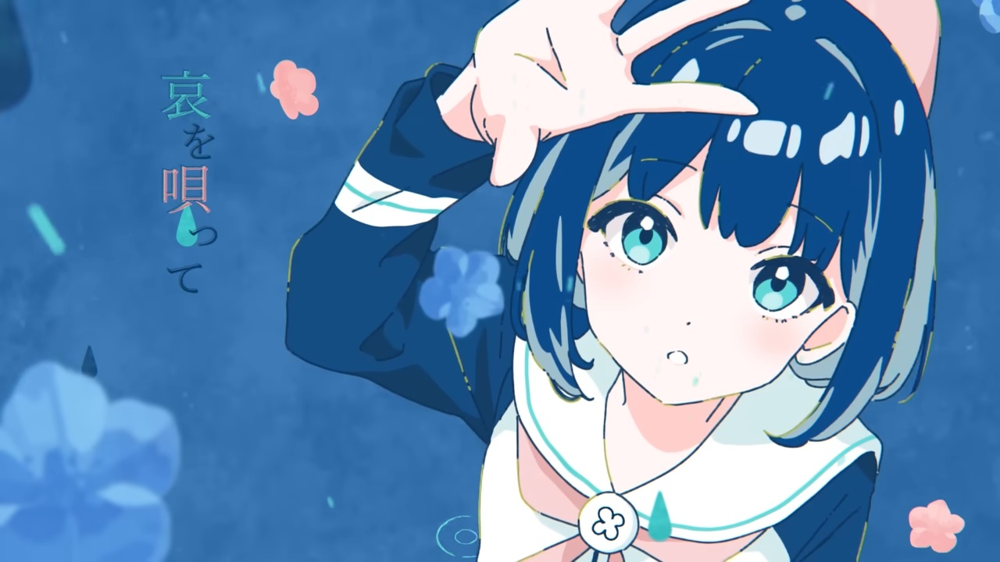
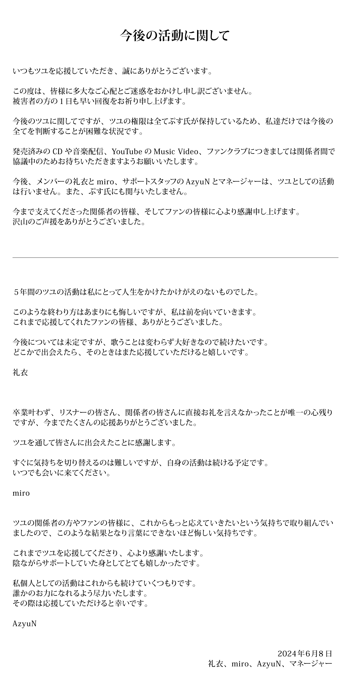

Pernyataan Terbaru Tuyu Mengenai Masa Depan Mereka
Akun Sosial Media Grup Musik Tuyu Merilis Pernyataan Terbaru Mengenai Masa Depan dan Dukungan Mereka di Tengah Kasus Kontroversial
Tuyu, salah satu grup musik yang terdiri dari Pusu (Maya Yano), Rei, dan miro, telah merilis pernyataan terbaru melalui akun sosial media resmi mereka pada tanggal 8 Juni 2024. Dalam pernyataan tersebut, mereka mengungkapkan pandangan mereka mengenai kejadian kontroversial yang baru-baru ini terjadi dan memberikan klarifikasi tentang rencana masa depan grup serta dukungan yang mereka terima.
Tuyu Meminta Maaf dan Mengharapkan Kesembuhan Para Korban 
Tuyu adalah sebuah unit musik yang terdiri dari Pusu (Maya Yano), Rei, dan miro. Grup ini dibentuk pada 12 Juni 2019, dengan Pusu yang bertanggung jawab atas komposisi lagu dan memainkan gitar, Rei sebagai vokalis, dan miro pada piano. Nama Tuyu berasal dari kata Jepang yang berarti “musim hujan”, sesuai dengan waktu pembentukan mereka. Grup ini telah mengumpulkan lebih dari 1.320.000 pelanggan YouTube dan dikenal dengan video musik mereka yang selalu menarik perhatian.
Pada tanggal 1 Juni, Maya Yano, yang lebih dikenal sebagai Pusu, komposer dan gitaris dari grup musik Tuyu, ditangkap oleh kepolisian Tokyo atas dugaan melukai terhadap pacarnya yang masih remaja. Polisi menerima panggilan darurat sekitar pukul 9:50 pagi dari Yano yang melaporkan bahwa dia telah melukai pacarnya dengan pisau. Saat tiba di tempat kejadian di apartemen Yano di Nakano Ward, polisi menemukan korban terbaring di tempat tidur dengan luka tusukan di bagian dada.
Dalam pernyataan mereka, Tuyu menyampaikan permintaan maaf kepada penggemar setia mereka dan siapa pun yang mungkin merasa terganggu atau khawatir mengenai kejadian yang melibatkan Pusu, komposer dan gitaris grup. Mereka juga menyampaikan harapan untuk kesembuhan para korban yang terkena dampak dari kejadian tersebut. Tuyu sangat menghargai dukungan yang telah diberikan oleh penggemar dan berjanji untuk terus berusaha melakukan yang terbaik.
Tuyu mengklarifikasi bahwa Pusu memegang semua wewenang atas grup ini, yang berarti keputusan-keputusan terkait masa depan dan proyek-proyek yang melibatkan Tuyu akan diambil oleh Pusu. Hal ini menunjukkan bahwa sulit bagi anggota lainnya untuk mengambil keputusan secara independen. Meskipun demikian, Tuyu menegaskan bahwa mereka sedang melakukan negosiasi dengan pihak terkait terkait distribusi musik, video musik di YouTube, fan club, dan proyek-proyek lainnya yang sudah dirilis sebelumnya. Mereka meminta penggemar untuk bersabar dan menunggu informasi lebih lanjut mengenai hal ini.
Tuyu juga mengumumkan bahwa anggota Rei dan miro, staf pendukung AzyuN, dan manajer grup tidak lagi aktif sebagai anggota Tuyu. Hal ini menunjukkan adanya perubahan dalam dinamika grup. Meskipun demikian, Tuyu tetap berharap untuk melanjutkan karya mereka di bidang musik dan menghadapi masa depan dengan semangat baru. Mereka sangat berterima kasih kepada semua orang yang terlibat dan penggemar yang telah mendukung mereka selama ini.
Pernyataan Pribadi
Selain pernyataan resmi dari Tuyu, anggota individu juga memberikan pernyataan pribadi mereka. Rei, vokalis Tuyu, menyatakan bahwa lima tahun beraktivitas bersama Tuyu merupakan pengalaman yang tak tergantikan baginya. Meskipun dia merasa kecewa dengan akhir yang tidak diharapkan, Rei berkomitmen untuk terus maju dan tetap menyanyi. Dia sangat berterima kasih kepada penggemar yang telah mendukung mereka sejauh ini dan berharap dapat mendapatkan dukungan kalian di masa depan.
Miro, pianis Tuyu, juga menyampaikan pernyataan pribadinya. Dia mengungkapkan penyesalannya karena tidak dapat berterima kasih secara langsung kepada pendengarnya dan semua orang yang terlibat dalam perjalanan mereka. Namun, miro merasa bersyukur atas dukungan yang diberikan selama ini dan bertekad untuk melanjutkan aktivitas musiknya. Dia mengundang kalian untuk terus mendukungnya di perjalanan yang akan datang.
AzyuN, ilustrator band ini, juga memberikan pernyataan pribadinya. Dia merasa frustrasi karena tidak dapat memberikan respon yang lebih banyak kepada penggemar dan semua orang yang terlibat dalam perjalanan mereka. Namun, AzyuN mengucapkan terima kasih dari lubuk hatinya yang terdalam atas dukungan yang telah diberikan selama ini. AzyuN berencana untuk melanjutkan aktivitasnya sebagai individu dan berjanji akan melakukan yang terbaik untuk membantu orang lain. Dia sangat mengharapkan dukungan kalian dalam perjalanannya.
Dalam kesimpulannya, Mereka mengakui situasi yang mereka hadapi saat ini dan berusaha untuk menavigasinya dengan baik. Mereka menyadari bahwa perubahan dalam anggota dan dinamika grup akan membawa tantangan baru, tetapi mereka tetap berkomitmen untuk melanjutkan karya mereka di industri musik. Tuyu sangat menghargai dukungan yang telah diberikan oleh penggemar dan berjanji untuk terus memberikan yang terbaik. Meskipun terjadi perubahan, semangat baru dan semangat untuk berkarya masih ada di dalam diri mereka. Penggemar diharapkan untuk tetap bersabar dan mendukung perjalanan mereka ke depan.